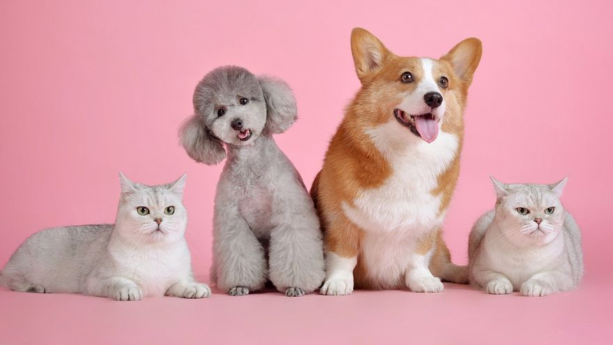

CERRAR
mascotass
Las mascotas son animales domésticos, también son llamados animales de compañía y como su nombre lo indica son conservados por sus dueños para formar parte de la familia, disminuir la soledad y traer la alegría a sus hogares.
